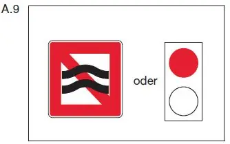

§ 6.20 Vermeidung von Wellenschlag
Binnenschifffahrtsstraßen-Ordnung
1. Ein Fahrzeug muss seine Geschwindigkeit so einrichten, dass Wellenschlag oder Sogwirkungen, die Schäden an einem stillliegenden oder einem in Fahrt befindlichen Fahrzeug oder Schwimmkörper oder an einer Anlage verursachen können, vermieden werden. Es muss seine Geschwindigkeit rechtzeitig vermindern, jedoch nicht unter das Maß, das zu seiner sicheren Steuerung notwendig ist:
a) vor einer Hafeneinmündung; b) in der Nähe eines Fahrzeugs, das am Ufer oder an einer Landebrücke festgemacht ist oder das lädt oder löscht; c) in der Nähe eines Fahrzeugs, das auf einer üblichen Liegestelle stillliegt; d) in der Nähe einer nicht frei fahrenden Fähre; e) auf einer Strecke, die durch das Zeichen A.9 (Anlage 7) gekennzeichnet ist. |  |
2. Gegenüber einem Kleinfahrzeug besteht die Verpflichtung nach Nummer 1 Satz 2 Buchstabe b und c nicht; § 1.04 bleibt unberührt.
3. Beim Vorbeifahren
a) an einem Fahrzeug, das die Bezeichnung nach § 3.25 Nummer 1 Satz 2 Buchstabe a führt,
b) an einem Fahrzeug, einem Schwimmkörper oder einer schwimmenden Anlage, das oder die die Bezeichnung nach § 3.29 Nummer 1 führt, oder
c) an einer Stelle und einem Fahrzeug, die oder das die Bezeichnung nach § 8.12 führt,
muss ein anderes Fahrzeug seine Geschwindigkeit, wie in Nummer 1 vorgeschrieben, vermindern. Es hat außerdem möglichst weiten Abstand zu halten.